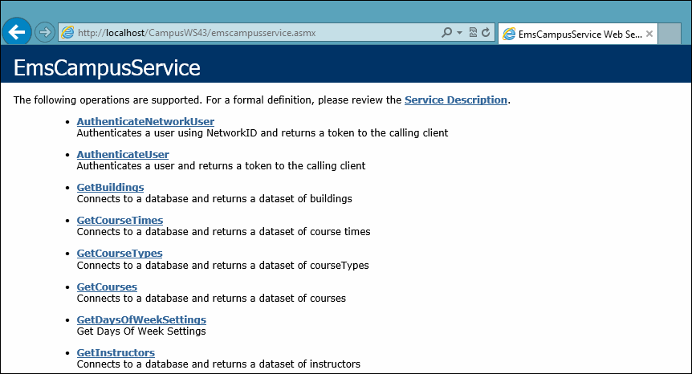

Installing/Upgrading the EMS Campus Web Service
template('MindTouch/Controls/PageOverview'); Important: Before beginning the installation process, please do the following:
- Install or upgrade your EMS databases as outlined in the EMS Installation Instructions.
- Manually uninstallany previous versions of the EMS Campus Web Service on your web server.
- Verify that the prerequisite software has been installed.
- Verify/confirm that the View.sql file has been executed against your SIS database. (Required for both first time installations AND upgrades.)
- Download the EMSCampusWebService.msi file onto the web server that will be running the web service.
- Run EMSCampusWebService.msi
- The first screen welcomes you to the EMS Campus Web Service Setup Wizard. Click Next > to begin the installation process. The Select Installation Address screen will appear.

- Select the Site, Virtual Directory and Application Pool. It is recommended that you keep the default settings. The installation process will create a Physical and Virtual directory on your web server named “EMSCampusWebService” (or whatever value you entered in the Virtual Directory field.) Click Next >.
Note: The EMS Campus Web Service should not be installed in the same Virtual Directory as other EMS web-based products.
- The Confirm Installation screen will appear. Click Next >. The SIS Settings screen will appear.

- In the Get data from section, choose either Flat File or SIS/CRM based on your SIS data source.
Choose this option if you will be outputting your SIS data to tab-delimited files. The EMS Campus Web Service will connect to and read information from these files which must conform to a specific format. See Appendix A for file format specifications. If you choose this option, please skip to Step 13.
Choose this option if EMS Campus will be tied directly to your SIS database. The EMS Campus Web Service will connect directly to and read information from your SIS.
- In the SIS/CRM Settings section, select your Connection Type based on the Database Management System that your SIS uses:
- SQLClient – MS SQL Server
- OracleClient – Oracle
- ODBC – Other ODBC-compliant database
- Select your Connection Method.
- Data Source Name – The DSN for your SIS database if you selected OracleClient or ODBC. This option requires an ODBC Data Source created via the ODBC Data Source Administrator.
- Server / Database – Your SIS server name and database name if you selected SQLClient.
- Enter the User ID / Password for your SIS. The account created in the ‘Installing the EMS Campus Views’ section in this document should be used.
- Click the Verify Connection button to confirm a successful connection to your SIS database.
- In the EMS Settings section, enter your EMS Server Name / Database Name.
- Click the Verify Connection button to confirm a successful connection to your EMS Campus database.
- Click Done. The Installation Complete screen will appear. Click Close. EMS Campus clients using the tab-delimited file option should skip to Step 19.
- Secure the Queries.xml file provided by your Client Services Consultant.
- On your web server, navigate to the CustomConfig folder within your EMS Campus Web Service directory (typically C:\Inetpub\wwwroot\EMSCampusWebService\CustomConfig).
- Replace the existing Queries.xml file with the new Queries.xml file (required for new EMS Campus installations AND upgrades.)
- After following the steps above, verify your installation by opening a browser and entering the following URL:
http://[ServerName]/EMSCampusWebService/EMSCampusService.asmx(replace [ServerName] with the name of your web server)
The following screen should appear:

Page tags: article:topicEMS Campus Web Service and White PaperEMS Campus Web Service InstallEMS Campus White Paperpersona:SysAdminCampus